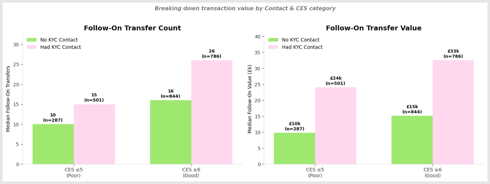
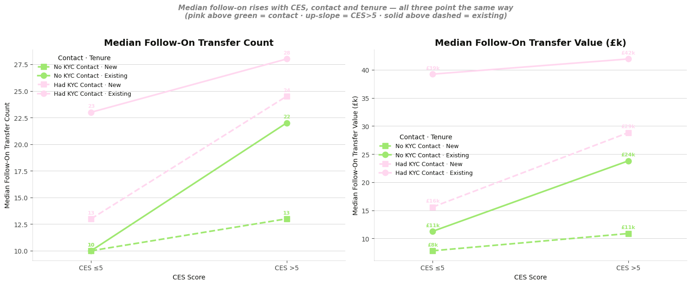
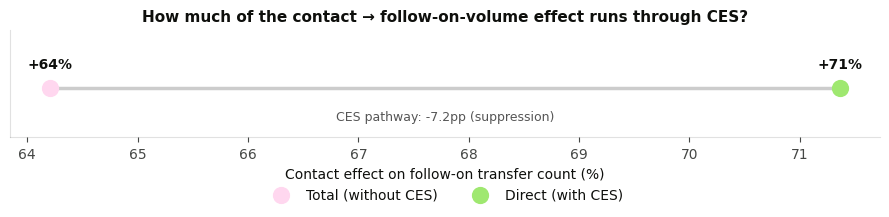

Business CES & Support Contact Impact on Follow-On Transactions
Is support-contact rate a valid proxy for user experience during KYC onboarding? Matched-cohort analysis of CES, KYC support contacts, and follow-on transaction behaviour.
Support Contact Rate as a measure of User Experience.
We currently track "support contact rate" as a key metric. This is a critical measure of cost and important to measure.
I want to assess whether or not we can safely use support contact rate as a proxy for user experience. To do this I've utilised the CES score and the follow on transactions/transaction volume.
This builds on the prior analysis which showed that CES was associated with follow on transfer count and volume - higher CES scores were associated with ~7-8% increase in transaction count and volume. So it follows that if contacting support is also associated with lower CES scores, and similarly reduced transaction volumes, contact rate could be a good proxy of user experience.
To do this, I created two groups:
- users who started verification, contacted support for a "kyc" reason, and then took the survey
- users who started verification, did not contact support, and then took the survey
Getting these groups right was fairly tricky, and also very important to the outcome. To ensure that this is measuring the right thing, the support contact has to happen AFTER verification start, and BEFORE the survey.
Narrowing down the user group with this strict requirement means that I was not able to do this analysis for personal verification, as the numbers were not there.
There are also two subsets of this user group - those who were transacting before verification (existing users) and those who were not (new users). The analysis counts the post contact transactions for both groups.
Findings & Implications
- Users who contact suppport DO have lower CES scores. i.e., contacting support is a worse experience than not having to contact support
- However, users who contact support have MUCH higher follow on transaction rates. This is the opposite of what we'd expect given the lower CES score.
- This is because contacting support is a signal that confounds intent/need with the experience.
- As a result, using support contact rate to describe user experience is only partially correct. Importantly, increases or decreases to contact rate COULD indicate a change to user experience, but it could also indicate a mix-shift in who is making it through the experience.
- A purpose built perception measure - in this case, CES - captures the experience perception regardless of intent. So, if you're launching a change and need to assess the impact on user experience, it'd be better to ship a specific perception measure and measure that rather than relying solely on contact rate.
This just sounds like mental gymnastics, what's the harm in simply using Contact Rate? You said it's a worse experience, so what's the problem?
As a hypothetical, imagine we decide we've had enough of support spending and ship a UI that tells people "Don't bother contacting support, we're not going to help you, get lost." The people who weren't going to contact support would continue not to do so, and the people who would have will stop.
- Contact rate goes down.
- But that's obviously a worse experience, and those people who we're now churning would have had more engagement over the long run.
That's obviously a crazy scenario. But, it's not impossible that we ship a UI that inadvertently tells people the same thing. Even with everyone full of good intent to make a better user experience, translating intent to perception in product design is not a foolproof process. In this more realistic scenario:
- Contact rate would also drop, for the same reasons as the hypothetical scenario.
- Measuring contact rate alone, we'd have no way to know that the UI was actually a worse experience, and this damage wouldn't show up until months later in the follow-on transactions numbers.
The perception measure gives the instant, undistorted signal that we got the experience right or wrong.
To start, since this is sampled data and a specific subset of the audience, I ran the same model that looks at CES -> follow on transactions. Fortunately, the relationship is almost identical to the prior set, with ~7% follow on transaction per CES point association.
While this confirms that the CES/worse outcomes association holds true, it shows a substantially different than expected relationship between having a support experience and follow on outcome:
- The hypothesis was that support contact would be a worse experience and therefore worse follow on economic outcomes.
- This shows the opposite, at an extremely high (~+60%) magnitude.


What seems to be happening here is that while the CES relationship is the same, hthe baseline value between contacting support and not contacting support groups are shifted, with those who contact support having a much higher baseline. This is evidence of the intent/need confounding the model.

This relationship can be seen more clearly in this visualisation:
- while lower/higher CES scores have lower/higher median transfer counts and values, the audience who contacts support tends to be higher in number and value across the board.


Looking at the conversion rate, there is further evidence of a confound. While we might expect people who have a support contact to fail verification at a higher rate, for this audience we see the opposite, with a substantially higher rate of conversion for those who have a support contact.
This is further evidence that there is an intent/need confound at play.

This shows that having a support contact does create some engagement hesitancy - the users that do need support have a slightly greater time to a second post-contact transfer than those who do not. CES also predicts this, to a greater extent, as the median days to a second transfer are higher at lower CES scores within groups.
Testing whether user tenure (new vs existing) drives the effect
Recall from the outset that there are two sub-groups within this populations - those that had prior transfers and had to go through verification again, and those who were starting fresh.
It's reasonable to assume that the existing users are skewing these results, as they are more embedded in their account and thus would have a higher intent to complete even when faced with a support experience.
What the data shows (matched cohort, n≈2,900): tenure matters, but not in the way the hypothesis predicted.
- Tenure is a real main effect — existing users make meaningfully more follow-on transfers than new users, holding CES, platform and contact constant.
- But it does not moderate the contact effect — the contact × tenure interaction is not significant, and the contact association is actually at least as strong for new users as for existing ones. Contact's positive link to volume holds in the same direction for both groups.
In other words: existing users have more post-contact transactions, but removing this cohort from the group wouldn't change the overall finding; that change in baseline doesn't impact the outcome that contact rate is confounded by intent/need.

Understanding CES's ability to measure the experience impact of a Support Contact
As shown above, CES is lower, all things equal, for those who have a Support Contact experience compared to those who do not. Comparing the models, this becomes clear; the effect of support contact is attitudinal, whereas the downstream financial impact appears driven by the intent confound - which is why controlling for CES increases the contact-volume association rather than shrinking it.
This data shows that the CES measure is effective at detecting this kind of experience impact. I.e., the latent trait that CES is designed to measure, and the impact of having a support contact experience are aligned. Compare this to evidence-related friction, which didn't have a similar effect, and you can start to see the lines within which CES is most useful.
However, like the evidence analysis, this data shows that there are many other factors that shape how people perceive the experience (low R^2).

Note on the CES model fit. Contact (plus controls) explains only ~3% of CES variance (R²=0.029). This does not weaken the mediation finding — contact reliably shifts CES (−0.66 points, p<0.001); it's just a small component of an individual's overall score, which is dominated by everything else in the experience (fees, speed, trust, disposition). The same ~3% appears in the evidence analysis, and reinforces the programme thesis: any single operational driver is a minor ingredient of a global effort score, so detecting and acting on a specific driver calls for a targeted measure rather than the blunt aggregate.